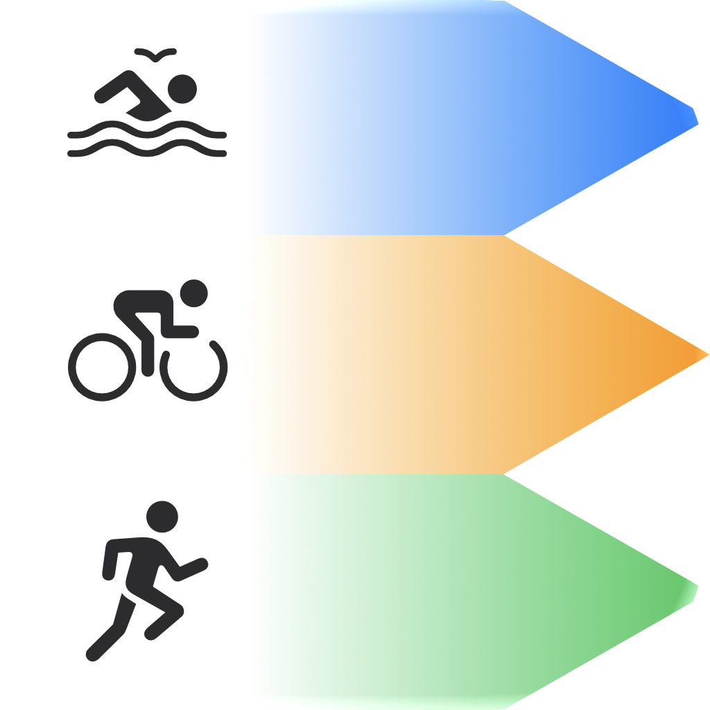

TriExport
Export your triathlon
to Strava.
Apple Watch records your whole multisport workout. Strava wants three activities. TriExport gives you three clean GPX files — swim, bike, run — ready to upload.